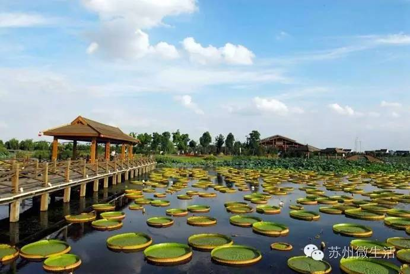

从夏末到初秋，苏州有我喜欢一个地方的全部理由

炎炎夏日很快就要和我们说再见了，一想到秋高气爽，就忍不住各种小期待。从夏末到初秋，不想就这样错过苏州最美的季节。
来一次秋风略过耳垂的骑行
阳澄湖骑行是这个季节必做的一件事，蜿蜒迤逦的车道搭配盈盈湖水，还会经过仙樱湖公园、莲池湖公园和云杉湖公园，骑乘其间，顿感浪漫迷人。
傍晚骑行最好，踏着夕阳，趁着凉爽的秋风，边骑边欣赏沿途的风景，比窝在家看剧吃零食有意思多了。
坐在落满银杏叶的长椅上发呆
苏大本部有几颗百年银杏树，一到秋天，满眼的金黄落叶缤纷，加上明国老建筑，说不出来的学院气质。
厚厚的落叶，踩上去沙沙作响，找一个长椅或者角落，什么都不要做，光发发呆就很享受了。
挑战最秀丽的登山极限
灵岩山秋天最大的魅力之一就是登山，山形像一朵灵芝，怪石嶙峋，松林满山，山顶有灵岩寺，爬到山顶，饿了就去吃碗素面。
当然，登山途中一路漫山遍野的草木，满眼的翠绿，登山灵岩山的最高点“琴台”，就可以远眺太湖，俯瞰新区，有着一览众山小的豪迈。
秋高气爽，且看桂花飘香
光福镇有桂花品种23个，每当金秋送爽时，这里“叶密千层绿，花开万点黄”，满眼的桂花树，幽暗的桂花香。

家前屋后，娇黄红白繁花争艳，随处可见的收桂花的小贩，看村民们高高兴兴的拿着卖桂花换来的钱，劳有所获的感觉真棒。
闹市中寻一处古老的意境
文庙有四棵数百年的老银杏，分别是连理杏、福杏、寿杏和三元杏，个头最大的连理杏距今已有637年了，而且叶子也是椭圆形的，年龄最大的寿杏距今837年了。
这个隐秘在闹市中的文庙，有着江南学府之冠的美誉，秋日的午后，沐浴着阳光，看看金黄的银杏，静下心来慢慢享受先人留下来的宏伟。
置身荷香的荷塘泛舟
荷塘月色湿地公园就是根据朱自清先生的荷塘意境，利用废旧鱼塘改造而成的。九月天渐渐凉爽，坐上小木船，摇啊摇，置身荷香之中，和荷花来一次亲密接触。
转廊亭台，荷塘泛舟，欣赏荷莲美景，随便拍一张都是绝美的大片，这个夏天，怎么能不体验一下莲叶何田田的视觉盛宴呢。
此花开尽更无花
上方山森林公园算是个一年四季都值得来的地方，尤其是老动物园搬迁过来之后，大家都一直等着开园呢，当然，秋天的上方山更值得一提的是壮观的菊花展。
每年的十一月份这里都会有菊花展，各种品种的菊花摆放在院内，还被凹成了各种造型，有大象的、花篮、孔雀等，特别期待今年又会有什么让我们大开眼界呢。
享受银杏叶下的慢时光
道前街的银杏是出了名的美，但却也是看不厌的景，这里有最自然最灿烂的秋色。
漫步在银杏树下，看银杏树叶飘落肩头，随手拍一张照片，美的连滤镜都不用加。
迷失在金色的梦幻国度
东山是全国银杏五大产地之一，山地斜坡，公路两旁，家前屋后，都有银杏园。可以说，真正的银杏粉丝们都爱去东山。
东山的银杏在十一月初开始变黄，经过秋霜和微冷天气的打磨，下旬叶子开始变黄，十一月中下旬到十二月上旬，大片大片的金灿灿的世界，像是到了一个梦幻国度。
漫步在五彩的通幽小径
在虎丘，满山的色彩迷幻，蓝天下的金色银杏，楼阁旁的七彩枫叶，抖落出虎丘的秋色美景和苍古雄境。
漫步洒落秋叶的通幽小径，阵阵桂香沁人心脾。徘徊幽邃的“西溪环翠”，静听瀑流曲水低吟，放眼斑烂丘野。
赴一场约定的红枫之约
去天平山看枫叶是苏州人秋天必做的一件事情，在这里看枫叶如火，层林尽然，遇见最美的苏城。
一般到十一月中旬，就能看到闻名天下的五彩枫景，枫叶由青变黄，再变橙，变红，最后变紫，因为每棵树的变色步调不一致，往往在一棵树上就能看见五色并存的美丽景象。
暖男怀里泡温泉、享受沙漠风情
大阳山就好像一个贴心“暖男”，在寒冷的冬季体验45℃的地下热汤，在28℃恒温下一览世界各地沙漠风情。
堪称“镇园之宝”的大阳山植物园展览温室里的热带雨林馆，让你即使身处北纬也能欣赏到跨赤道线的热带风情。
在藏书镇做一只贪吃的灰太狼
冬天来藏书镇，为的就是一口温暖的羊汤。这条堪称“灰太狼”的天堂的美食街，羊肉店林立，有传承五代的百年老店，也有个性十足的小作坊。
吃完羊肉，酒足饭饱之后，前往木渎古镇玩一个下午。看冬日水乡人家的静谧生活，看手摇船悠然地划过一个个桥洞。
舒展身心的骑行、金灿灿的银杏、火红的枫叶、温润的泉水……从夏末到初秋，苏州，有我喜欢一个地方的全部理由。